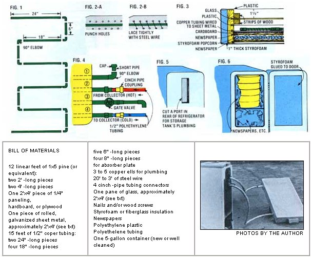

Everyone knows that refrigerators are good for storing cold. What everyone doesn't know is that fridges are also very good for storing heat...as Miles K. Free III points out in the following report.
Ever go riding or walking through the countryside ... and discover an old, abandoned Frigidaire, Kelvinator, or what-have-you just sitting there collecting dirt, leaves, and field mice? A while ago-after I was laid off from the local steel Mill-I began to encounter so many of these derelict fridges that I actually found it profitable to load them into my pickup and sell them to the local scrap yard for $15 to $20 per ton.
For a while, I felt good knowing that I was helping to clean up the countryside, and recycle tons of valuable metals (thereby reducing the need for mining). I'll admit, too, that I didn't mind pocketing the few extra bucks that my "fridge salvaging" operation was netting me. But still, it was slightly upsetting to see all those once-useful appliances go on the scrap heap.
"Surely," I said to myself, "there must be some useful function that a precision-made, well insulated 'cabinet' can serve." And that's when it hit me: Why not use an old refrigerator to store heat, rather than cold? Specifically, why not build a simple solar collector ... connect it to a water storage tank ... enclose the tank in a recycled fridge ... and stick the whole works out in the sun to generate a constant supply of "free" hot water?
To make a long story brief, I went ahead and built just such a water heater (see the accompanying illustrations) using about $30 worth of easily obtainable materials ( see the accompanying Bill of Materials ) ... and the darned thing works great! Here's how it all went together.
My water heater's solar collector basically consists of an insulated, 2' X 4' X 5" wooden box, an "absorber plate" (some black-painted copper tubing on a black-painted sheet of metal), and several layers of plastic and glass glazing.
The "shell" of the collector was easy enough to make: All I did was nail together a 5" X 2' X 4' box out of scrap lumber and wood paneling. (The exact dimensions here aren't that important ... I just made the largest box I could with what materials I had on hand. If you want to construct an even larger collector, by all means feel free to do so! )
To make my collector's "absorber plate", I first salvaged about 15 feet of copper tubing and - after cleaning it up with sandpaper - cut the pipe into 6" 8", 18" and 24 " lengths. ( See the accompanying Bill of Materials. ) Then I soldered elbows to the ends of the 6" pieces, taking care to see that the joints faced the same direction. (I checked the elbows' exact alignment by making sure-as I put each elbow/pipe/elbow assembly on the ground-that both "ells" touched the floor.)
Next, I soldered the 18" lengths of pipe to the elbows of the five 6" pieces to create a "zigzag" pattern of pipes. (This was done on a flat surface to ensure that the finished assembly would be flat.) Afterwards, I soldered 24" lengths of tubing to the last two open elbows to produce the assembly shown in Fig. 1.
I then used tin snips to cut a piece of thin galvanized sheet metal to fit the inside of the collector box. (I also smoothed the metal's ragged edges with sandpaper and rounded off the piece's corners so I wouldn't accidentally cut myself.) Then I soldered the zigzag pipe assembly to the sheet of metal, punched holes in the metal along both sides of the pipe (throughout the pipe's length), and laced the pipe assembly firmly to the sheet metal with steel wire, to increase the tubing's contact with the metal. ( See Figs. 2-A and 2-B .) Finally, I spray-painted the entire unit flat black. This constituted my collector's "absorber plate".
At this point, I was ready to mount the absorber in the box, which I did as follows: First, I drilled holes in the side of the box for the absorber's "inflow" and "outflow" pipes ... then I [1] laid newspaper, styrofoam "popcorn", more newspaper, and a layer of corrugated cardboard down inside the box, [2] placed the absorber on top of the cardboard (and put the inflow/outflow pipes through their respective holes), [3] stapled a sheet of clear plastic inside the box 1/2" above the absorber plate, [4] nailed some small strips of wood inside the container (Fig. 3), [5] laid a cut-to-fit pane of glass on top of the wood strips, and [6] very carefully nailed more strips of wood over the glass to hold it in place. ( See Fig. 3 .) Finally, I glued styrofoam to the outside of the collector and stapled a large sheet of plastic over the entire assembly to keep out the winter winds.
I used an inexpensive five-gallon gasoline can for my water heater's storage tank. Any vessel that'll fit inside a gutted ref rige rator ought to work, though.
I modified the can as follows: First-after sanding away all the paint and dirt on the side of the container opposite the seam-I punched four holes in the can's wall. Next, I enlarged the openings to accept 1/2"-diameter copper pipe with a snug fit. Then I soldered 8"-long pieces of tubing to the openings so that 5" to 6" of pipe stuck out of the can. ( See Fig. 4 .)
The first order of business here is to remove all accessories-including the motor, compressor, heat exchange coils, freezer compartment, etc.-from the fridge. (Do this outside, and try-if at all possible-not to rupture any pipes. The freon refrigerant that may come spewing out of any connections you break is harmful to the earth's upper atmosphere, and extremely cold ... cold enough to "burn" an arm, a neck, or a face. Work slowly, use your common sense, and do the job away from children and other spectators.) Save the fridge's shelves.
The ex-refrigerator I used was a 1939 Frigidaire that had a removable panel behind the freezer area. It was no problem, then, for me to take out this panel ... thereby creating an 8" X 10" port through which I could insert my water tank's four inflow/outflow pipes. (Note: It's important that the storage tank be located as high as possible inside the refrigerator so a good thermosiphon will take place between tank and collector.)
If your coldbox doesn't have a removable back panel, don't fret. Here's what you do: First, punch several closely spaced holes in the back of the f ridge, then insert your tin snips in one of the holes and cut a 3" X 12" slot in the insulated box's back. Next, fold the cut edges under with a pair of pliers (so you won't cut yourself) and reach in and remove the insulation from the cut-away portion of the wall by hand. Finally, go around to the other side of the wall and cut away a second 3" X 12" opening (and again, turn the ragged edges under with your pliers). Your water tank's pipes should fit through the slot you've just cut. ( See Fig. 5 .)
OK. Now find a block of wood that's a little larger than the slot in the back of your coldbox. Drill four holes in the wood corresponding to the four pipes in your water storage can ... then drill holes (for bolts) around the periphery of the block (and the periphery of the f ridge's 3" X 12" slot). Bolt the block to the opening in the back of your refrigerator.
It's time now to insulate your storage tank. Wrap the tank with aluminum foil (shiny side in) and wrap its sides and bottom with whatever insulation you have handy. (I used several layers of scrap plastic and two days' worth of newspapers, bound in place with steel wire.) Be sure-before going any further- that your storage tank has a vent hole in its top. Make one, if necessary.
You might-at this point-also want to insulate your refrigerator's door. I glued an inch of styrofoam to the inside of mine.
All that's left now is to mount the water storage tank inside the refrigerator. (Your tank can rest on one of the fridge's existing shelves, or you can rig a makeshift shelf-or other type of support- yourself.) Finally, fill the refrigerator up with old newspapers (neatly, so you can open the door later without making a huge mess). See Fig. 6.
Assuming that your water tank is to be manually filled (as mine is), you'll want to put a 90° elbow and a short piece of tubing on the tank's topmost-or number one-pipe, as shown in Fig. 4. (Note that the short piece of tubing must not extend any higher than the vessel's vent opening, or the tank will overflow when you fill it.) I suggest you keep a 1/2" end cap on the pipe between fillings to ensure that the system's water will remain unpolluted. (Run a small length of chain or wire from the cap to the wooden block on the back of the fridge, and you'll never have to worry about the cap becoming lost, stolen, or contaminated.)
The second and fourth pipes from the top of the storage tank will lead to the collector. To these pipes' ends, I attached plastic connectors of the type called "cinch pipe". (This type of connector allows you to connect or disconnect polyethylene tubing quickly and easily ... a big plus when it comes to moving the solar heater's components around.) If like me-you plan to move your heater often, you'll probably benefit from using cinch pipe connectors. (You might want to put "cutoff" valves on each of the storage tank's three lowermost pipes, too, to avoid getting wet when you disconnect the hoses from the tank.) Otherwise, you can plumb your tank with copper pipes and fittings. and count on leaving the system where it is permanently.
After putting cinch pipe fittings on my tank's number two and four "spouts", I [1] affixed the same kind of fittings to my collector's inflow and outflow pipes, [2] put a piece of polyethylene tubing between the number two pipe and the topmost collector fitting, and [3] ran a piece of plastic tubing from the tank's number four pipe to the collector's lowermost cinch pipe f itting.
As for the water tank's number three "spout": This pipe should be fitted with a gate valve (I used a $1.69 Honeywell unit) followed by a 3" or 4" segment of pipe and a 90° elbow (facing down). This is your hot water faucet. (Note: Be sure you mount the valve so that the little arrow on the casting faces in the same direction as the flow ... which is to say, away from the storage tank.)
All you have to do now to get your water heater set up and working is [1] place the collector where it'll be in constant sunlight, [2] face the panel due south, [3] angle it to receive the maximum amount of sunlight (i.e., an angle from the ground equal to your latitude plus 15°), and [4] fill the system with water. Several hours later (assuming the sun's out), you'll have hot water!
Just how warm your water will be depends on many factors-including the size of your collector, the outside air temperature, etc-but to give you an idea of what's possible, my unit's water temperature soars into the 140° to 160°F range on sunny summer days ... and I manage to get temperatures of 70° to 90°F on the coldest winter days (when Ole Sol isn't totally obscured by clouds). And that-remember-is with a little old eight-square-foot collector!
If you live in one of the colder parts of the country, it may be advisable for you to insulate the tubing between the collector and the refrigerator ... and-if the water's not going to be used for bathing or drinking purposes-you may want to add antifreeze to the system. (Whatever you do, though, DON'T use salt as an antifreeze ... it'll corrode and destroy your tank and absorber in short order.) I use windshield-washer antifreeze in my unit during the winter, and replace the coolant with pure water after the worst part of the cold weather season is past.
There are other variations on the above theme. (For instance, rather than manually refilling your water tank, you may want to hook a garden hose-or other pressurized supply line-to the tank, so that the vessel automatically refills every time you draw hot water from it ... but, if you do, make sure your storage tank has no vent hole in its top!) At any rate, I think you get the basic idea. Old refrigerators never die ... they just get made into other things. Including- sometimessolar water heaters.
Miles K. Free III-author of the foregoing article - says he'd like to hear from other refrigerator recyclers who are experimenting with solar energy. You can reach Miles at 359 W. Rayen Ave., Youngstown, Ohio 44502 (but do be courteous enough to send a stamped, self-addressed envelope and/or a small contribution, if you expect to receive a reply).-The Editors.
|
 |
|
|